At power stations, IPT Engineering has replaced obsolete and unreliable hydraulic and electric actuators on fan vanes, dampers and valves, re-engineering each application with Beck electric actuators.
The original drives brought high-cost maintenance, process weaknesses and the environmental hazards associated with hydraulic power packs. Each replacement was engineered to remove those problems for good.
The Results
Improved process performance and system reliability
Environmental hazards from hydraulic power packs eliminated
High-cost maintenance removed, with a maintenance-free solution for the plants
At one site, replacing the feed regulating valve actuators allowed a section of the system that had been out of service for many years to be recommissioned, making the process more cost-effective to operate
ID Fan Vane Damper Actuator: 100 Million Starts
Proven in service since 2013
The Beck actuator on the ID fan vane damper was installed in 2013. When its run data was checked in 2021, it had made over 100 million starts in about eight years of continuous modulating service.
That level of fine modulating control helps improve air flow through the boiler, improving performance. It is also why we describe Beck actuators as fit and forget.
Replacing the Hydraulic ID Fan Damper System
The upgrade behind the 100 million starts
The original ID fan damper drive was a hydraulic cylinder fed by an electric motor-driven power pack, installed when the station was commissioned. It was obsolete, and the fans were not achieving the precision and repeatability the unit needed, with a potential effect on the efficiency of the whole unit.
The power pack had to stay energised to hold pressure, so surplus oil was continually forced over the relief valve, wasting energy and adding maintenance. Oil filters had to be changed regularly to keep the oil clean, adding cost and disposal problems, and leaking cylinder seals were an environmental hazard.
The station required an upgrade that would match or beat the hydraulic stroke time, give the best possible resolution and repeatability, and be as close to maintenance-free as possible, with reliability a key issue. Several actuator suppliers were invited to propose. Beck drives were chosen because they met the strict technical requirements, even though the site had never used Beck before and it was not the cheapest option.
The two drives were installed and commissioned in about five hours. They energise only in response to a demand, so power consumption fell, and they run between outages without maintenance.
Output torque: 10,846 Nm
Full 100° crank arm stroke: 20 seconds (configurable from 15 to 300 seconds)
Minimum step size: 0.1°
Hysteresis: 0.25% of span at any point
Motor current: about 3.5 A
Beck drive on the ID fan damper, with the linkage up to the damper shaft
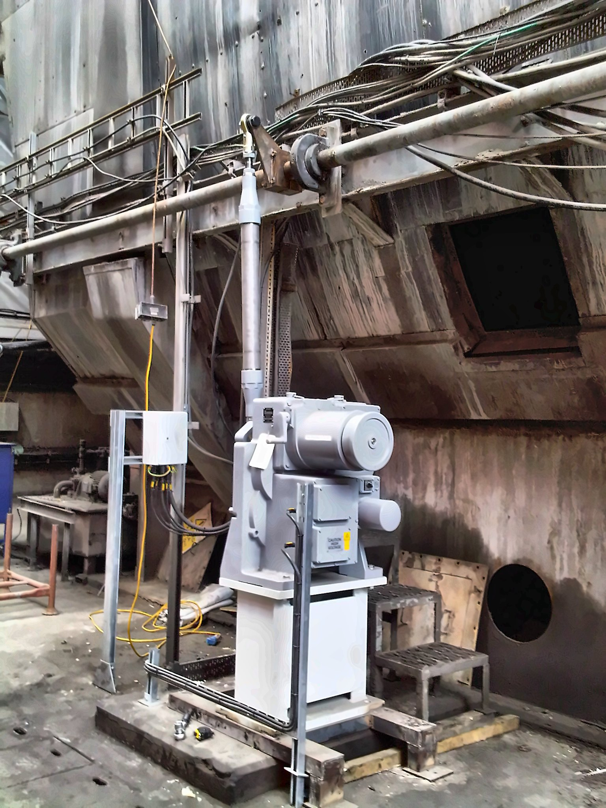
The second ID fan damper drive on its pedestal
Before & After
Original drives and the Beck electric actuators that replaced them, in the same positions.
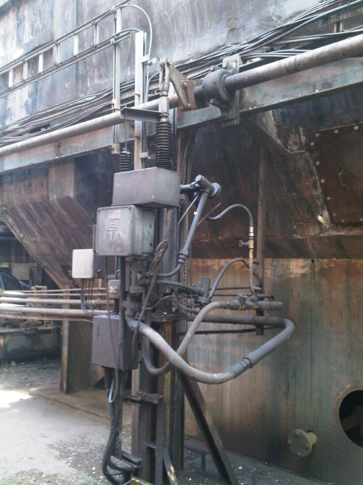
BeforeOriginal hydraulic drive on the ID fan vane damperAfterBeck electric actuator on the ID fan vane damper, installed in 2013 and still in service
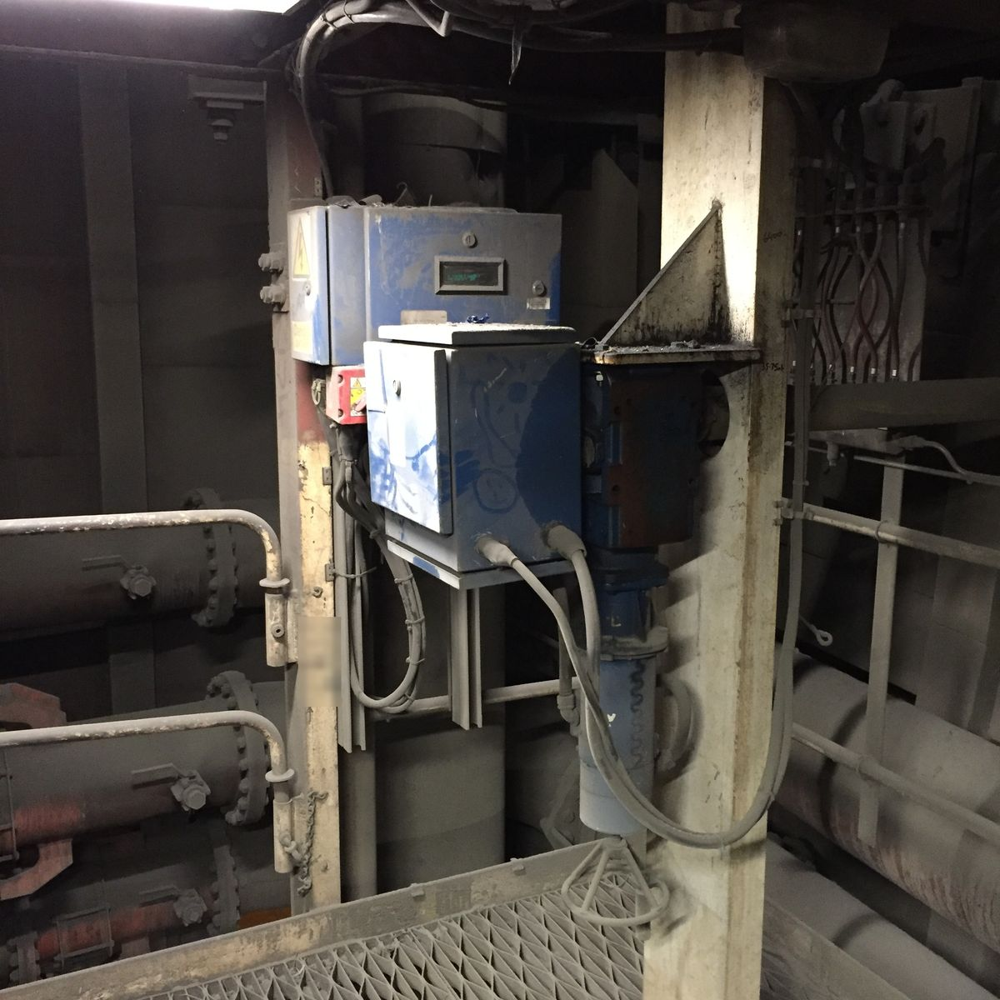
BeforeOriginal electric drive
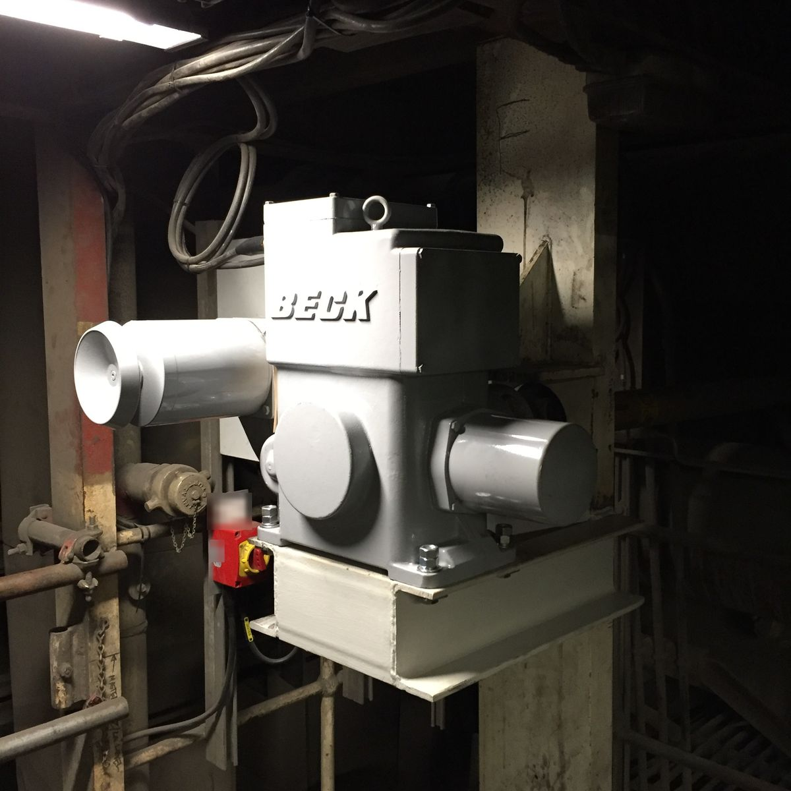
AfterBeck electric actuator replacement
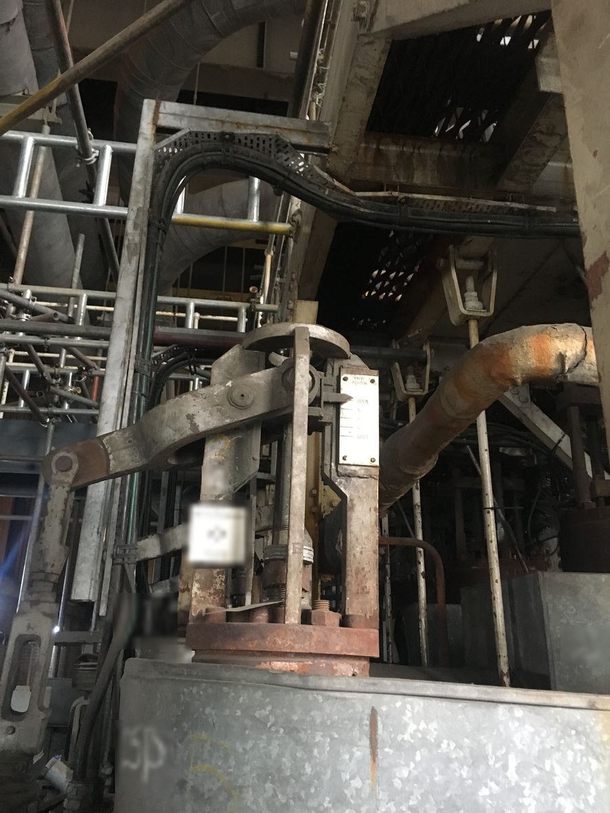
BeforeOriginal feed regulating valve drive
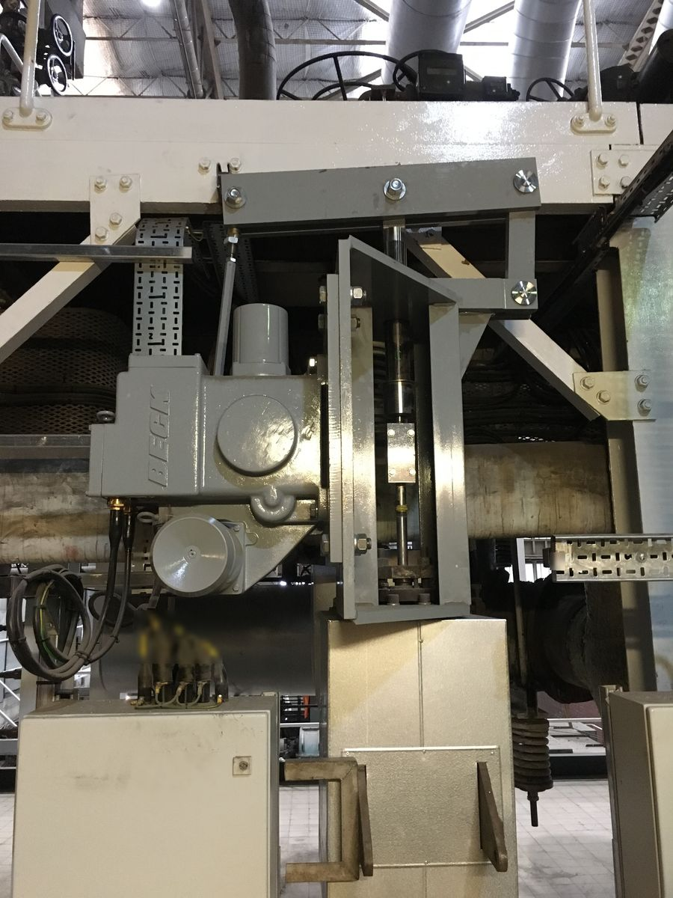
AfterBeck actuator on the feed regulating valve, allowing the system section to be recommissioned
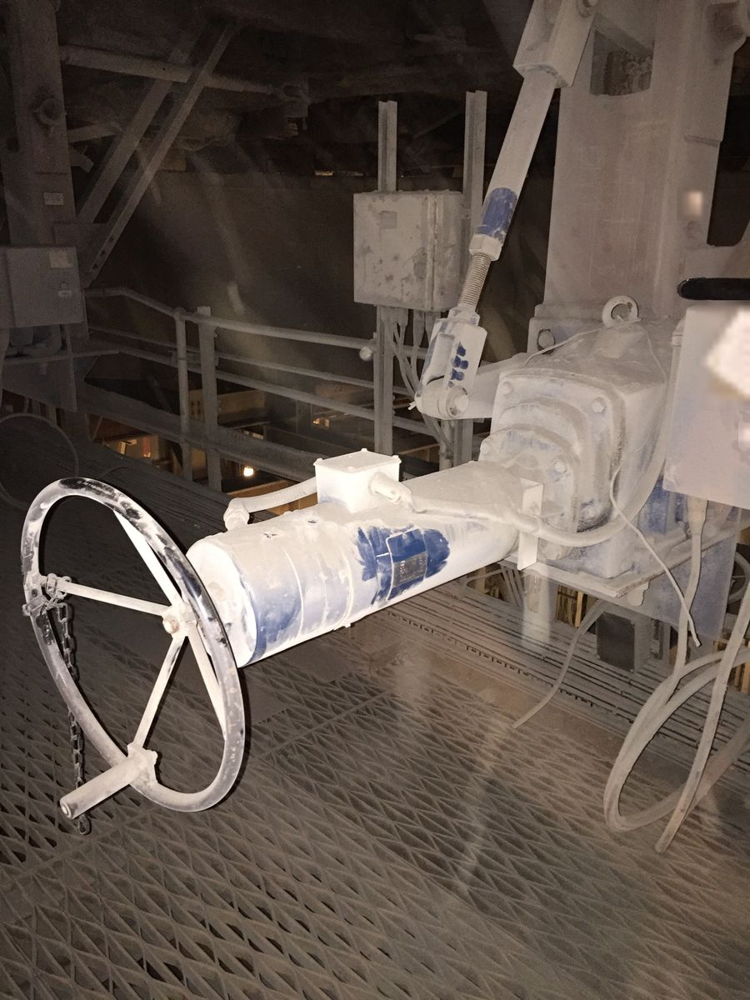
BeforeOriginal superheat actuator
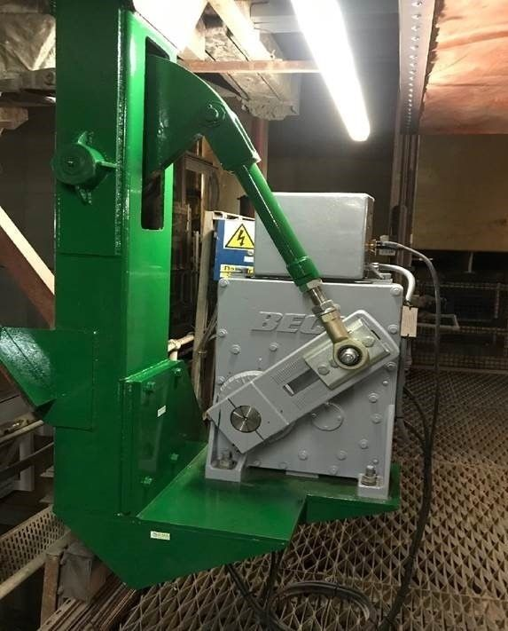
AfterBeck superheat actuator on a support bracket designed by IPT, with IPT supporting the installation
More Power Station Installations
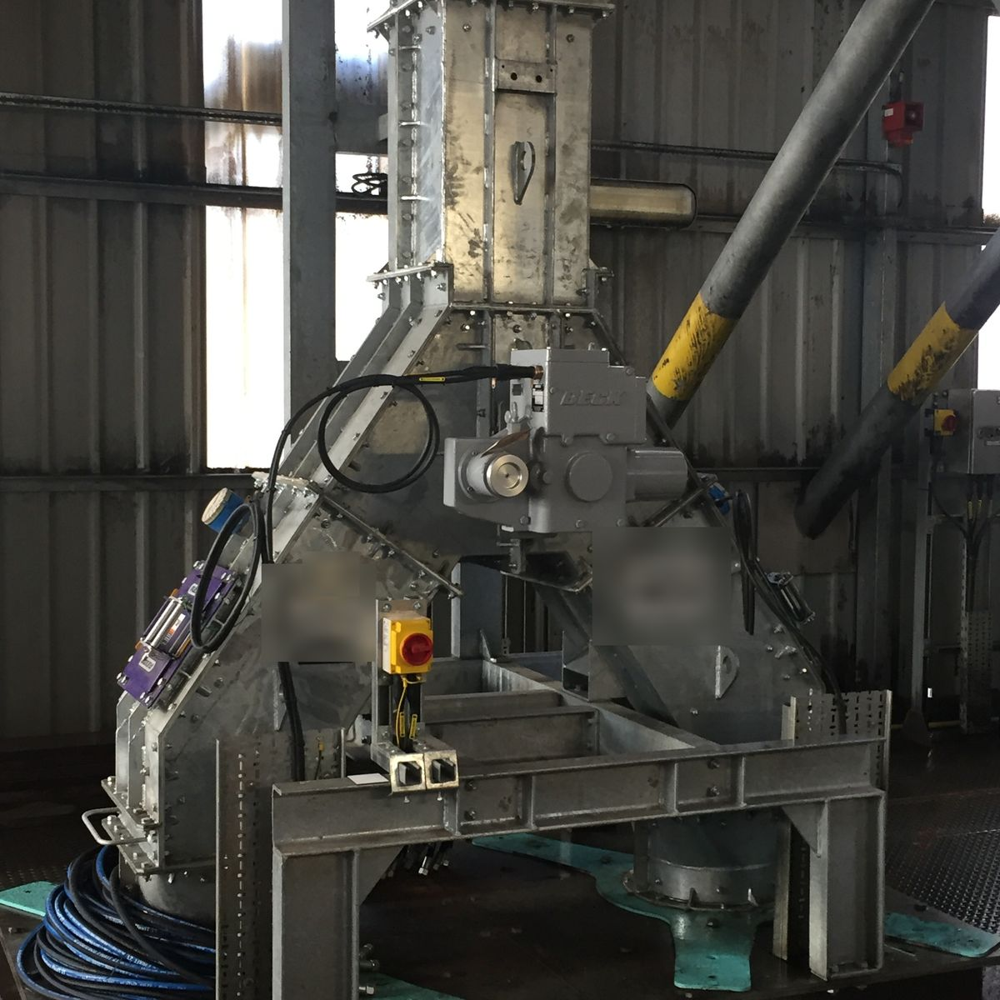
Beck actuator on a fuel feed diverter
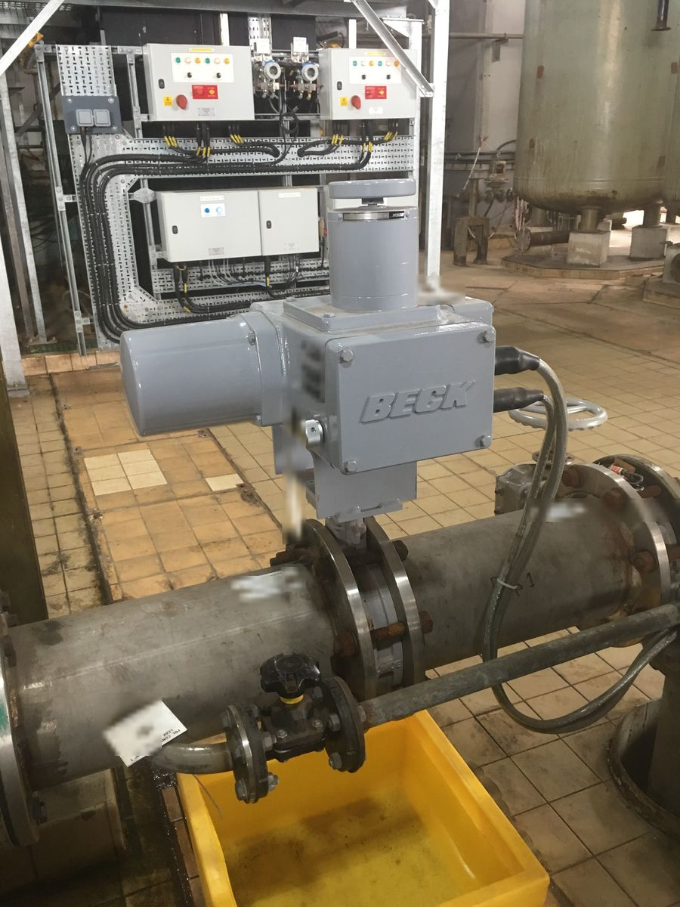
Beck actuator on a water treatment plant valve
Primary Air Damper Upgrade
At another UK coal-fired power station, the primary air damper control was upgraded with 24 Beck Group 31 actuators. The site had no Beck actuators installed, but reliability and performance were equally important: the dampers are positioned so that non-routine maintenance is virtually impossible while the unit is generating.
The actuator and valve assemblies were supplied factory-calibrated for a drop-in installation, so the station had minimal work to do on site.
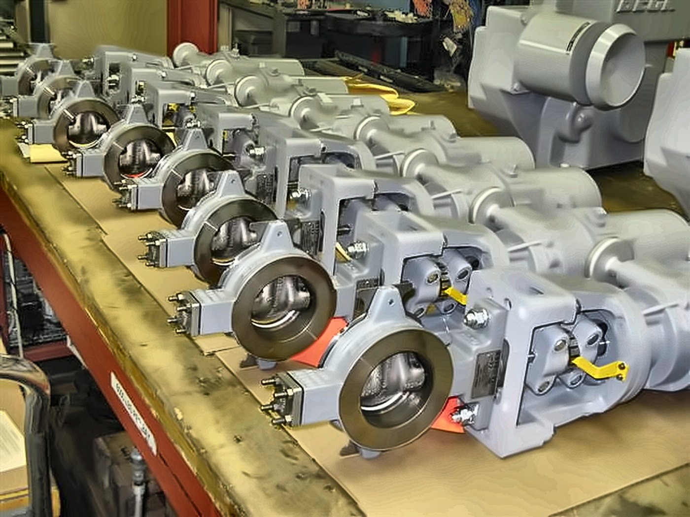
Factory-calibrated Beck Group 31 actuator and valve assemblies ready for dispatch
Have an obsolete, unreliable or unsupported actuator? Send us the nameplate details or a photograph and we will review the application. Contact us or send us the details.